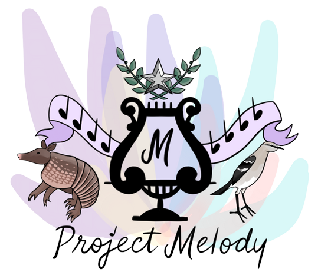
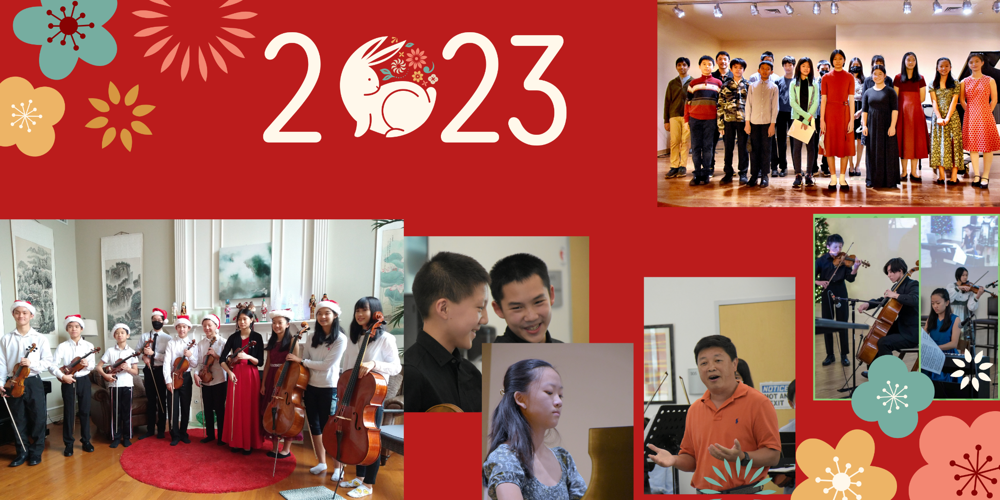
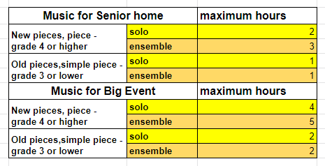
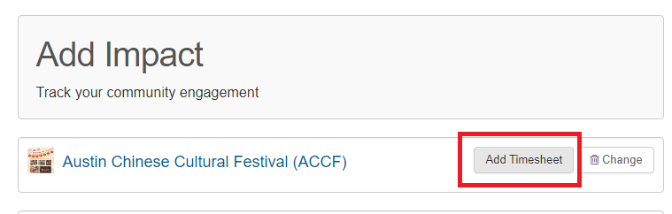
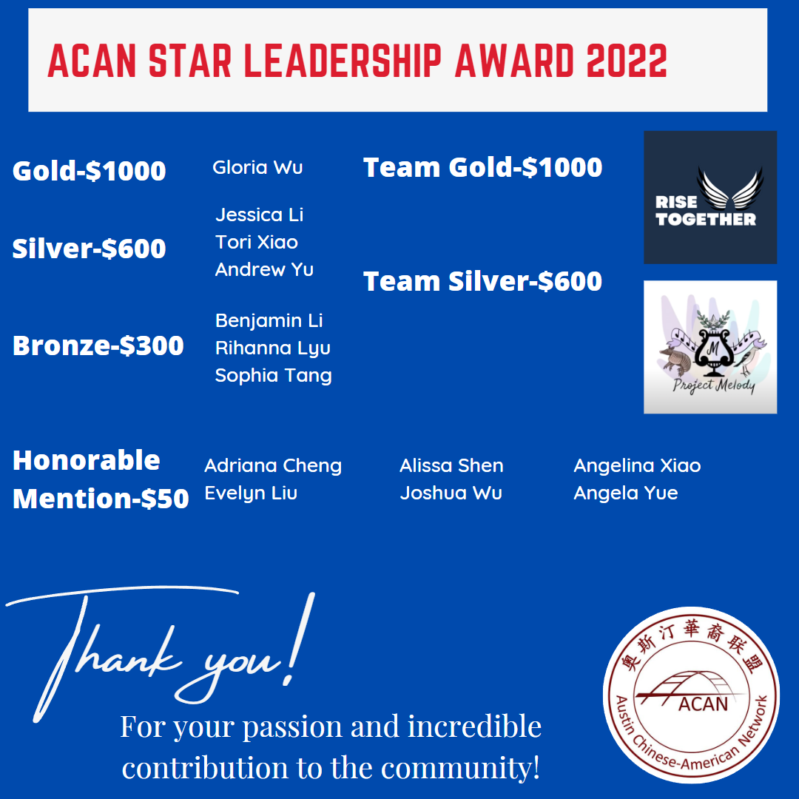
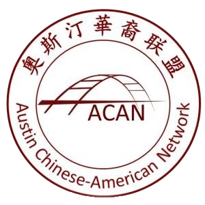

January 1st 2023 Newsletter
Welcome to Project Melody

Hello Project Melody members, welcome!! We are so glad that you have decided to join us.
This is our Newsletter, which contains important information, updates, and announcements from the past month. Scroll to the bottom for important upcoming dates!
Words from Staff and Members
Mentor
Hello all staff and members! This past year, Project Melody grew so fast and made a very big impact on our community. Thank you to all the members and performers that helped make it happen! Everyone did a great job and we look forward to having another great year!
In 2023 We would encourage everyone to focus on community services, actively participating in all kinds of ACAN events, and senior home performances. We hope everyone will
- be proud of being a member
- be proud of working together
- be proud of serving our community
Adriana
Hello everybody! Thank you so much for becoming a member of Project Melody. It has been a great year working with you guys. I am so glad that I have had the privilege to see this community grow as we have fun while serving our community. I can’t wait for the upcoming year and for more opportunities to get together and spread the love of music. Happy new year and enjoy 2023!
Evelyn
I wanted to thank everyone for joining Project Melody. We’ve had our challenges throughout the year, but working together as this amazing community has allowed us to grow as we spread music to people all over the city. I’m excited to help the project progress as we try to expand it to hopefully be able to perform for more demographics, as well as have more events and cool music-related endeavors in the future!
Dalton
Hello everyone! It has been really amazing working with you all for the past year. 2022 was a tough year for Project Melody, as it was Project Melody's first year of existence, but with your help and hard work, we made it happen. I would like to thank our amazing staff and our mentors helping us with logistical issues, as well as the Austin Chinese American Network, or ACAN, for providing us with the funds necessary for the functioning of Project Melody. I would also like to thank all of YOU, the members, who spent your time practicing and preparing for concerts. I wish everyone a happy New Year and an amazing 2023!
Iris
I am so grateful to be able to play with musicians in the community and share the music to others at the same time. Thank you for being part of the Project Melody! I've been able to make so many new friends and grow both as a person and a musician, too. I hope this new year we are able to find others who are interested in music and be able to give them a chance to show who they are through music as well as have more amazing concerts with amazing music!
Aiden
I’m really proud and supportive that Project Melody continues to grow as a blossoming organization in our community. It’s beginning to become a defining characteristic, and really something to be proud of, in our city. I hope that as time goes on, I’ll be able to tell all my out of state friends about Project Melody while they jealously listen, wishing that we were to expand and create such a branch in their community.
I especially felt that sort of “friendship pride” when Dalton conducted the Project Melody orchestra.
General Information
If you have specific questions, please contact one of our officers:
- President: Adriana Cheng
- Vice President: Evelyn Liu
- Secretary: Iris Chen
- Treasurer: Lerchen Zhong
- Event Coordinator: Alex Zhong
- Event Coordinator: Annie Zhu
- Webmaster: Jason Li
- Discord Manager: Dalton Ma
Volunteer Information
We use Givepulse to certify volunteer hours from practicing for/going to concerts! To make an account on Givepulse, follow these instructions (including registering with ACAN): https://austinchineseamericannetwork.org/givepulse-step-by-step-guide/
Givepulse is a tool used by ACAN (Austin Chinese-American Network) to get volunteer hours approved. You do not have to be an ACAN member to use Givepulse! Reference the following chart when entering service hours for all Project Melody events/concerts.
Big Events include - ACAN Chinese Culture Festival, ACAN Christmas Gala,Project Melody Fundraiser Concert, Project Melody Online Concert etc.
Keep in mind that it will likely take a few days for your service hours to get approved.
Please note down a general practice log when you submit your volunteer hours if you enter a number of hours that exceeds the values from the chart to make it easier for us to verify your practice hours.
Awards
The President’s Volunteer Service Award
Congratulations to our 5 staff members for receiving the President's Service Award!
- Gold
- Evelyn Liu, Iris Chen
- Silver
- Adriana Cheng, Lerchen Zhong
- Bronze
- Jason Li
Applications for the 2023 Presidential Service Award and the ACAN Star Leadership Award will open on June 1, 2023, using the same application form. Service hours of persons applying for the selection of awards can be counted from June 1, 2022 to May 31, 2023. Please be sure to certify all service hours from concerts with GivePulse for all volunteer hours beginning June 1, 2022.
You can apply for this award as long as you are an ACAN member and have the required amount of service hours for the award you’re applying for. Here’s more information on it if you’re interested: https://austinchineseamericannetwork.org/presidents-volunteer-service-award-pvsa/
ACAN Star Leadership Award
In total 24 individuals and 3 groups applied for the ACAN Star Leadership Award this year. After reviewing, the judging committee composed of ACAN directors and volunteers selected one individual Gold Award, three Silver Awards, three Bronze Awards, and six Encouragement Awards according to the standards of contribution to the community, creativity, and leadership, as well as a team gold award and a silver award.
Congratulations to Project Melody who won the silver team award. We will receive $600!
These individuals and teams will receive rewards of different amounts, and at the ACCF 2023 held on February 11, they will participate in the award ceremony and receive prizes and bonuses with the winners of the President's Service Award.
We warmly congratulate these winners here. In line with the purpose of serving the community and promoting culture, ACAN/Project Melody encourages young people to participate in, initiate and organize various volunteer activities to make contributions to the community. ACAN will open applications for the Presidential Service Award (PVSA) and the ACAN Star Leadership Award (ASLA) in June 2023. Teenagers are asked to keep using the GivePulse platform and keep a record of their participation in volunteer activities.
Past Events
Thank you for all the performances who participated and brought wonderful music to our community! Please check out our Youtube channel and instagram for more details.
https://www.youtube.com/channel/UCVxn59RmtXPuggd8uzMC8lA
https://www.instagram.com/project_melody_music/
- 9/25 -- Renaissance-Austin - Senior Living & Care Community
- 11/21 -- Longhorn Village Senior Living
- 11/27 -– Longhorn Village Senior Living
- 12/22 -- Clairmont Retirement Community
- 12/24 -- Christmas Online Concert
Special Announcements
Since Dalton is moving out of Austin, he can no longer be our orchestra director, but he will still stay with us in our discord server and become the discord manager. We wish him the best for his studies and music career, and we can’t thank him enough for everything he has done for Project Melody.
We have recently established a South Austin branch which started 1/1/2023. Please contact Adriana/Evelyn for more information.
Thank you so much!!!
Important Dates 2023
- 1/16 -- The Enclave Senior Living
- 2/11 -- ACAN Chinese Culture Festival（ACCF）
- 2/20 -- Longhorn Village Senior Living
- 3/4 -- Global Festival @ Griffin High School
- 3/19 -- Isle at Cedar Ridge
- 4/21 -- Senior home TBD
- 6/1 -- ACAN PSVA/ACAN Star Leadership Award Application Start Date
- 8/14 -- ACAN/Project Melody Music Festival (TBD)
